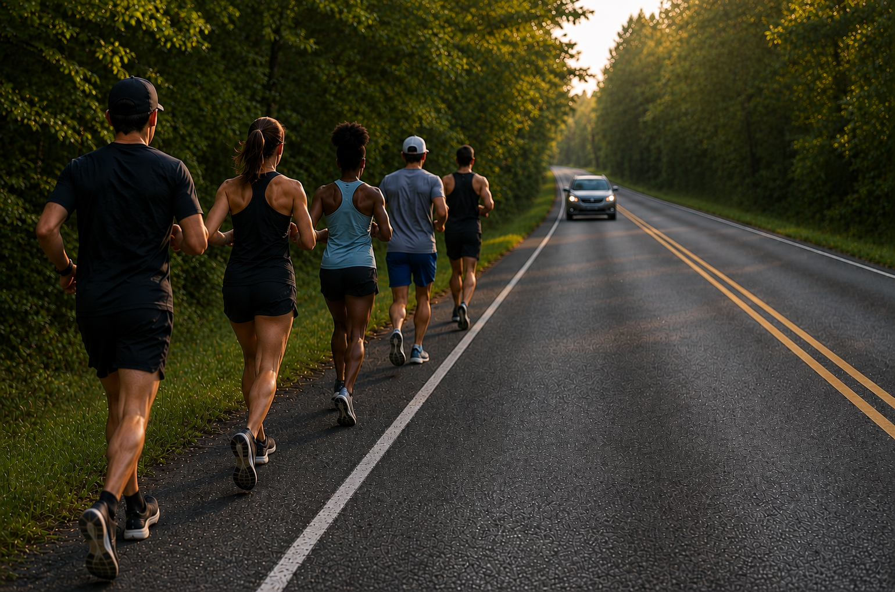

- Men's mile world record
- 3:42.66
- Women's mile world record
- 4:07.64
By runners, for runners
Honest reviews, training plans, and stories from people who actually log the miles
Latest headlines
Running news
Loading latest headlines…
Life outside the splits
The Long Run

beginner
Rules of the road: traffic safety for new runners
Facing traffic, blind curves, and what to carry
community
The unwritten rules of run club
Etiquette, mindset, and what nobody tells you
👟
gear
Do you actually need trail shoes?
When road shoes are fine off-pavement
🏁
beginner
Tips for your first 5k
What to expect and how to not go out too fast
Tested by us
Reviews
From the kitchen
Food & fueling
🍝
pre-run
Easy pre-race pasta, 3 ways
Low-fiber options that won't wreck your stomach
🥤
recovery
Recovery smoothie recipes
Protein-forward, ready in 5 minutes
🍚
fueling
Homemade rice cakes for long runs
Cheaper and tastier than store gels
🥣
breakfast
Race-morning breakfast, tested
What to eat 2-3 hours before the gun
Free plans